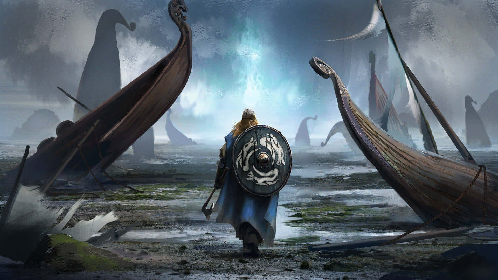

Vikingos
Historia de Dioses y Conquistas
Los vikingos, surgidos en el norte de Europa entre los siglos VIII y XI, fueron exploradores, guerreros y navegantes que expandieron sus dominios desde Escandinavia hacia gran parte del continente.
Su historia está profundamente ligada a la mitología nórdica, donde dioses como Odín, Thor y Freyja guiaban sus creencias y costumbres.
Las crónicas relatan incursiones y guerras que marcaron la Edad Media, dejando un legado de conquistas, comercio y leyendas que aún hoy despiertan fascinación.
Este sitio reúne su pasado histórico, las batallas más célebres y la forma en que su cultura sigue viva en producciones modernas de cine y televisión.
